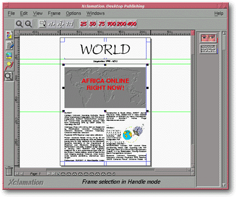
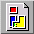
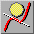
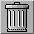

<!-- Documentation Xclamation (c)1994-2000 AXENE contact axene@axene.org>
<html>

<head>
<title>General Interface</title>
</head>

<body BGCOLOR="#FFFFFF" BACKGROUND="Images/back.gif" TEXT="#000000">

<p ALIGN="right"> </p>

<p><br>
<br>
The most prominent window is called the main interface. All <a HREF="Document_Window.html">document</a>.
commands are executed from this window. <br>
<br>
</p>

<hr>

<p align="center"><br>
 <br>
<small><i>Screen shot: General Interface. </i></small></p>

<p><br>
</p>

<hr>

<p><br>
</p>

<h3>The main interface is set up vertically and horizontally:</h3>

<ol>
  <li><a NAME="menu_bar">The <b>menu bar</b> contains the following roll-down menus:<br>
    &nbsp; <ul>
      <li></a><a HREF="Menu_File.html">Menu <i>&quot;File&quot;</i>.</a> <br>
        &nbsp;</li>
      <li><a HREF="Menu_Edit.html">Menu <i>&quot;Edit&quot;</i>.</a> <br>
        &nbsp;</li>
      <li><a HREF="Menu_View.html">Menu <i>&quot;View&quot;</i>.</a> <br>
        &nbsp;</li>
      <li><a HREF="Menu_Frame.html">Menu <i>&quot;Frame&quot;</i>.</a> <br>
        &nbsp;</li>
      <li><a HREF="Menu_Options.html">Menu <i>&quot;Options&quot;</i>.</a> <br>
        &nbsp;</li>
      <li><a HREF="Menu_Window.html">Menu <i>&quot;Windows&quot;</i>.</a> <br>
        &nbsp;</li>
      <li><a HREF="Menu_Help.html">Menu <i>&quot;Help&quot;</i>.</a> <br>
        &nbsp;</li>
    </ul>
  </li>
  <li><a NAME="horizontal_icon_bar">Many commands on the active document are executed from the
    <b>horizontal menu bar buttons</b>. The options available on this horizontal bar vary
    depending upon which vertical toolbar button is engaged. </a><br>
    &nbsp;</li>
  <li><a NAME="vertical_icon_bar">There are two types of buttons offered on the <b>vertical
    toolbar</b>: a series of buttons used to change the options offered on the horizontal
    toolbar, and the single &quot;Trash&quot; icon. Descriptions of these buttons follow: </a><br>
    &nbsp;<ul>
      <li><a NAME="frame_icon_vbar"> The
        first button shifts the </a><a HREF="HBar_Frame.html">horizontal toolbar to
        &quot;Frame&quot;</a> mode. <br>
        &nbsp;</li>
      <li><a NAME="text_icon_vbar"> The
        second button shifts the </a><a HREF="HBar_Text.html">horizontal toolbar to
        &quot;Text&quot;</a> mode. <br>
        &nbsp;</li>
      <li><a NAME="image_icon_vbar"> The
        third button shifts the </a><a HREF="HBar_Image.html">horizontal toolbar to
        &quot;Images&quot;</a> mode. <br>
        &nbsp;</li>
      <li><a NAME="vector_icon_vbar"> The
        fourth button shifts the </a><a HREF="HBar_Vector.html">horizontal toolbar to &quot;Line
        Art&quot;</a> mode. <br>
        &nbsp;</li>
      <li><a NAME="zoom_icon_vbar"> The
        fifth button shifts the </a><a HREF="HBar_Vector.html">horizontal toolbar to
        &quot;Zoom&quot;</a> mode. <br>
        &nbsp;</li>
      <li><a NAME="trash_icon_vbar"> The
        last button is the &quot;Trash&quot;. It is used to remove a frame selection from the
        active document. (see also </a><a HREF="Frame_Selection_Modes.html#move_frame">moving a
        frame</a>) <br>
        &nbsp;</li>
    </ul>
  </li>
  <li>Open <a HREF="Document_Window.html">documents</a> are displayed on the <b>desktop</b>
    and may take on one of three forms: <br>
    &nbsp;<ul>
      <li><a NAME="document_window">A regular window which can be deleted, moved, or re-sized on
        the desktop. </a><br>
        &nbsp;</li>
      <li><a NAME="document_icon">A movable icon on the desktop. Double-clicking on the document
        icon displays the document as a regular window. </a><br>
        &nbsp;</li>
      <li><a NAME="document_maximized">A maximum window filling the entire desktop space. Clicking
        on the small button at the upper right corner switches the document back to a regular
        window. Maximum Window is the default setting when a document is first opened in
        Xclamation. </a><br>
        &nbsp;</li>
    </ul>
  </li>
  <li><a NAME="clipboard">The <b>clipboard</b> represents its contents symbolically. Though
    &quot;hidden&quot; by default, it can be displayed or hidden again using the </a><a
    HREF="Menu_View.html#clipboard_menu_entry"><i>&quot;View&quot; menu </i></a>. Items are
    placed on the clipboard using the <a HREF="Menu_Edit.html#cut_menu_entry"><i>&quot;cut&quot;</i></a>
    and <a HREF="Menu_Edit.html#copy_menu_entry"><i>&quot;copy&quot;</i></a> functions from
    the <a HREF="Menu_Edit.html"><i>&quot;Edit&quot; menu </i></a>. <br>
    &nbsp;</li>
  <li><a NAME="hint_line">The <b>status bar</b> continuously displays the current command mode
    and gives basic information about buttons on Xclamation toolbars. When the cursor is
    placed over a button, a description of it's main function appears in the status bar.
    Although displayed by default, this bar can be hidden or displayed again from the </a><a
    HREF="Menu_View.html#clipboard_menu_entry"><i>&quot;View&quot; menu </i></a>. <br>
    &nbsp;</li>
</ol>

<p><br>
</p>

<hr>

<p ALIGN="right"></p>
</body>
</html>
